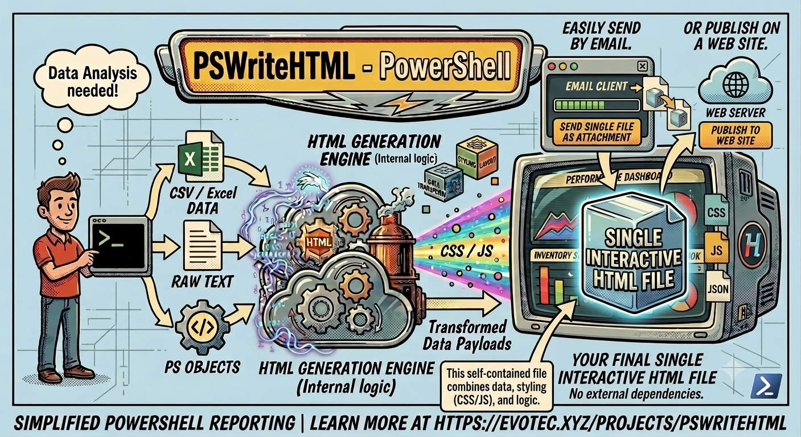
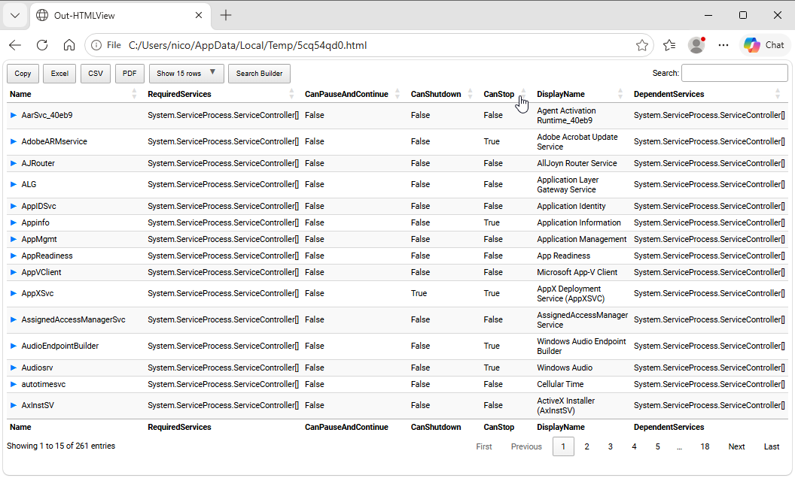

Chapter 1: What is PSWriteHTML?
About this manual
This manual is designed to help you quickly understand the capabilities of PSWriteHTML and how to implement it in your PowerShell scripts. Each chapter provides practical examples, best practices, and detailed explanations of the module’s features.
Nico Zanferrari (https://github.com/nicozanf) assembled it, after reading all the available documentations - mainly from the author Przemysław Kłys (EvotecIT) - see the last chapter for a list of sources, including video tutorials. Surely AI made a lot of work, but most of the results were manually refined and carefully reviewed. Nowadays it is maintained as an open-source project on GitHub at https://github.com/nicozanf/PSWriteHTML-doc . The resulting web manual is automatically generated from the repository on https://nicozanf.github.io/PSWriteHTML-doc , along with the pdf and epub versions.
Contributions, feedback, and suggestions are always welcome! Just open an issue or submit a pull request on the GitHub repository. If you find this manual useful, please consider starring the repository to show your support.
PSWriteHTML Overview
PSWriteHTML is an open-source PowerShell module created by Przemysław Kłys (Evotec) designed to automate the creation of rich, interactive, and modern HTML documents, reports, dashboards, and emails without requiring manual HTML, CSS, or JavaScript authoring.
Fig. 1 PSWriteHTML makes report generation in PowerShell simple, flexible, and visually engaging.

Fig. 2 The PSWriteHTML rendering engine transforms PowerShell data into HTML reports.
Why PSWriteHTML?
Generating IT reports, audit logs, system health dashboards, or automated client emails often requires presenting complex datasets clearly. PSWriteHTML bridges the gap between raw data collection in PowerShell and professional presentation.
Key Benefits
Zero Web Development Required: Write pure PowerShell using a declarative Domain-Specific Language (DSL).
Interactive Data Representation: Out-of-the-box support for search, pagination, sorting, and export (PDF, CSV, Excel) powered by DataTables.
Rich Visualization: Integrate interactive charts (bar, line, pie, donut, gauge) powered by ApexCharts and Chart.js.
Flexible Layout Systems: Organize content using tabs, accordions, multi-column panels, grids, and collapsible sections.
Network & Flow Diagrams: Render visual topology, organizational charts, and relational graphs using Vis Network.
Email & Document Ready: Generate inline CSS emails optimized for Microsoft Outlook or standalone single-file HTML reports.
Native PowerShell includes the ConvertTo-Html cmdlet, but its output is static, unstyled, and difficult to format. PSWriteHTML
replaces plain text tables with dynamic dashboards featuring interactive tables, real-time charts, tabbed navigation,
collapsible sections, custom styling, and diagramming capabilities.
Common Use Cases
Active Directory Auditing: Reporting on inactive accounts, password expiration dates, and group membership changes.
Infrastructure Monitoring: Daily health-check summaries for VMware, Hyper-V, Azure resources, or network devices.
Office 365 & Exchange Reports: Displaying mailbox usage, license allocation, and security compliance scores.
Automated HTML Emails: Sending formatted, inline-styled alert notifications via SMTP.
Tip
Because PSWriteHTML bundles required JavaScript and CSS libraries into self-contained HTML files (or references CDN sources), the output reports can easily be hosted on static web servers, AWS S3, or sent directly as email attachments. See Chapter 10: Advanced Features, Tips, and Troubleshooting
Quick Start Example
Here is a minimal working example that collects services data from your computer and generates an interactive report saved to disk:
Get-Service -ErrorAction SilentlyContinue | Out-HtmlView
This is an example of the power of PSWriteHTML: with a single command you can transform some data into a beautiful html page, with pagination, sorting, advanced searching capabilities, and even export in Excel/CSV/PDF !

Fig. 3 An interactive HTML table generated with the Out-HtmlView shortcut.
But this simple Out-HtmlView cmdlet in fact is a shortcut for the underlying New-HTML command, which allows you to further customize the report (for example selecting the columns included):
Import-Module PSWriteHTML # need PSWriteHTML already installed
# Gather services while suppressing permission errors
$Services = Get-Service -ErrorAction SilentlyContinue |
Select-Object -Property Name, DisplayName, Status, StartType
# Generate HTML Report
New-HTML -Title "Service Status" -Show {
New-HTMLTable -DataTable $Services
}
Core Architecture & DSL Concept
Component Hierarchy
The general layout structure follows a logical container model:
New-HTML
├── New-HTMLTab (Tab 1)
│ └── New-HTMLSection
│ └── New-HTMLPanel
│ └── New-HTMLTable / New-HTMLChart
└── New-HTMLTab (Tab 2)
└── New-HTMLSection
└── New-HTMLPanel
└── New-HTMLDiagram
How PSWriteHTML Works: The Rendering Engine
PSWriteHTML acts as an abstraction layer over modern front-end web technologies. When you execute a New-HTML script block:
AST & DSL Evaluation: The module processes your nested PowerShell commands (
New-HTMLTab,New-HTMLSection,New-HTMLTable,New-HTMLChart) and translates your PowerShell objects into structured JSON and HTML markup.Library Dependency Resolution: The engine automatically attaches and configures industry-standard web libraries behind the scenes:
DataTables: For dynamic searching, column filtering, pagination, and multi-format data exports (CSV, Excel, PDF).
ApexCharts / Chart.js: For rendering interactive line, bar, pie, radial, and donut charts.
FontAwesome: For vector icons across cards, buttons, and navigation tabs.
Bootstrap & Custom Layout CSS: For responsive grids, modern flexbox containers, and card styling.
Next Chapter: Chapter 2: Installation and Module Setup